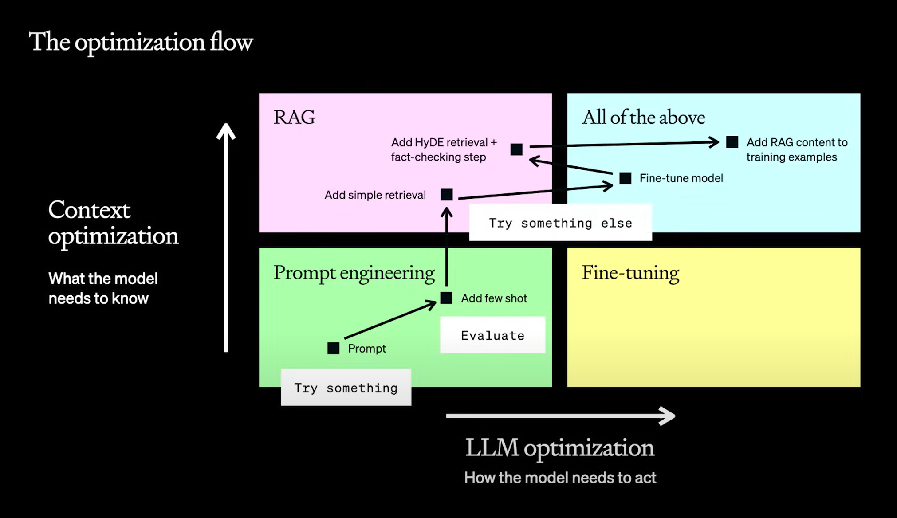
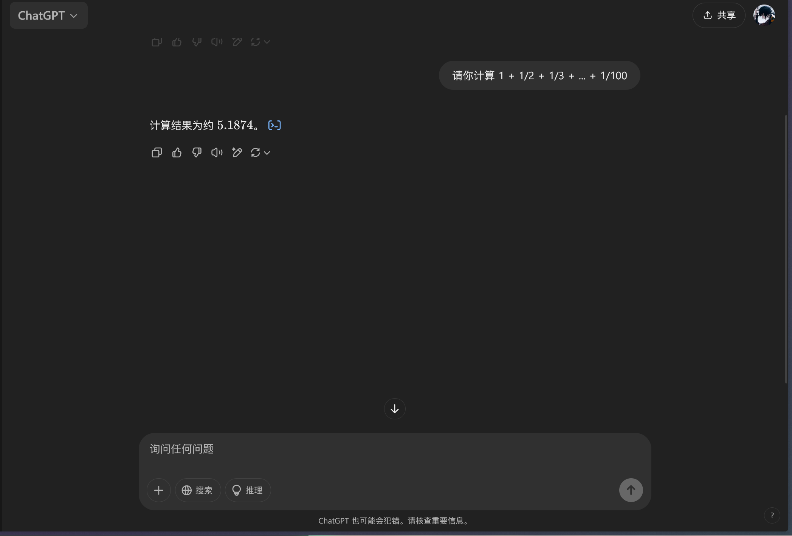
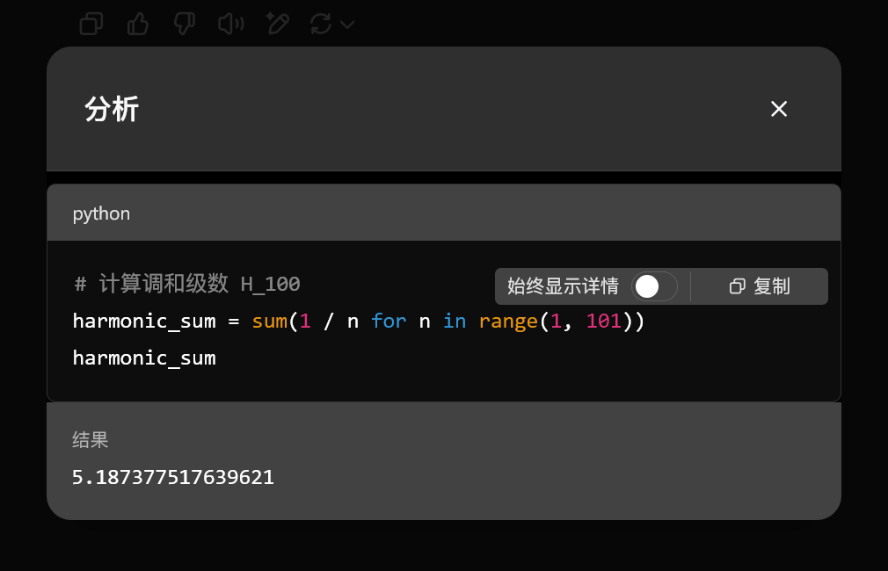

浅谈提示工程
引入
虽然用了不少时间的 LLM，但是我从来没有花时间研究过如何写好提示词，都是想到什么就输入什么，从不在意提示词的质量。对于一般场景，我们的输入随意一些并不会特别影响 LLM 的输出结果；而且随着技术的不断改进，只要简单讲几句，LLM 就能参透我们的意思。然而，如果要求 LLM 完成一些复杂的任务，那么只是简单地提一些要求，LLM 就无法按照我们预期所想的那样解决问题，总会在某些地方出岔子。这个时候，也许有些人就会红温，不仅抱怨道：“大模型怎么这么蠢啊！”——也许这不是因为 LLM 不够聪明，而是我们人类没有发挥出 LLM 的真正能力。
最近科研项目那边分配给我的任务是修改原有的提示词，以提高程序生成可视化数据的成功率。由于我是第一次做这个任务，所以在这个过程中遇到了不少问题，自以为修改后的提示词考虑的更全面，但是实际跑下来的成功率一跌再跌，很令我沮丧。所以我认为很有必要学习提示工程(prompt engineering)相关的知识，希望能利用这些知识写出高质量的提示词，少走一些弯路。
如果你和我一样是提示工程方面的小白的话，那么希望这篇文章对你有所帮助；如果你是经验丰富的提示工程师的话，那就敬请不吝赐教~
提示工程
提示词
在了解提示工程之前，首先要知道“提示词”(prompt)是什么。简单来说，它是为模型提供的输入，引导 AI 模型来生成特定的输出。
不过，从更本质的层面来看提示词的话，我十分赞同李继刚老师的观点：提示词的本质并非沟通，而是表达；而表达是让符号产生意义的活动。《关于说话的一切》这本书将「表达」拆解为三个核心部分：
- 本意：存在于脑海中的想法、模糊概念或方法论，这是表达中最根本的部分。本意的三要素为：
- 切身真实的经验
- 词汇与经验的映射关系
- 对原理的理解
- 文意：用恰当的语言符号表达脑海中的想法，这是表达中唯一能被我们直接修正的部分。
- 解意：对方接收自己的本意并转化为文字表达式，会在大脑中进行“解压缩”，试图理解文字背后的意思。本意与解意之间的差异，正是误解产生的源头，也是为什么有时候给大模型提示词后，它无法按预期回答的原因。
提示工程
而提示工程就是一种通过设计和调整输入（提示词）来改善模型性能或控制器输出结果的技术。提示词的好坏可能让模型的回答质量有着天壤之别，因此为了获得理想的模型结果，我们需要不断调整、设计好的提示词，这就是提示工程要做的事。
误区警告
很多人会认为，提示词指的就是用户的输入——这是常见的误区。实际上，提示词的输入不仅包含用户的输入，还有其他来源，比如预设的提示词，甚至模型自己的输出都是提示词的一部分。
简言之，所有会被模型用于预测输出结果的内容，都是提示词。
重要性
提示工程很重要。
-
提示词是调用大模型能力的接口，是用好大模型能力的核心
-
在 LLM 应用的开发和性能优化的过程中，提示工程贯穿始终
- 一切 LLM 应用推荐先从提示工程着手建立原型，作为性能优化的基石
- 若提示工程无法满足需求，再分析性能瓶颈的原因，采取进一步策略
- 比如通过 RAG（检索增强生成）构造更好的模型输入，所以 RAG 本质上也是一种提示工程
- 若要使用微调(fine-tuning)，通过提示工程构造高质量的微调数据也是微调成功的关键
- 模型性能提升后，数据质量进一步提升，将更优质的数据用于模型训练，然后更好的模型产出更好的数据，如此构建正向迭代循环（也称数据飞轮），其中每个环节都离不开好的提示工程
如何写好提示词
六大原则
OpenAI 官方的提示工程文档总结了六大原则（或者说最佳实践），并提供了一些可行策略，个人觉得总结得相当清晰全面，有很好的借鉴意义。下面给出提炼后的一些文字，如果不清楚其背后意思的话，强烈建议阅读原文，里面还给出相应的例子。
阅读前须知
下面提到的例子中会涉及到三种不同的角色：
- USER：用户，即发起对话的一方，提出问题或请求，期望从模型获得回答或帮助。
- ASSISTANT：就是模型，负责理解用户的输入并生成相应的回答。
- SYSTEM：系统级的消息或通知。例如在一个特定应用中，若需要告知用户某项功能的变化或提供某些知道，那么可能会使用这一标签。但在一般的模型对话中，这一角色并不常见。
另外，以下的六个原则是按照从易到难的顺序排列的，所以建议各位在实践过程中，可以先尝试着遵循前面的原则和策略，熟练掌握之后再学习后面的原则和策略，以达到循序渐进的效果。
- 编写清晰的指令(Write clear instructions)
- 在查询中包含详细信息（任何重要的细节以及上下文），以获得更相关的答案，这样可以减少模型的猜测和误解，从而提高交互效率和满意度。
- 要求模型扮演某个角色，这样模型会根据角色特性来作答，使回答根据特色和针对性，因此输出质量得以提升。
- 使用分隔符（比如三重引号
"""、XML标记<xxx>、节标题等等）清晰地表示输入的不同部分，这为模型理解复杂任务带来便利，也能减少模型的猜测和误解。 - 指定完成任务所需的步骤，使模型更容易 follow 你的意思。
- 提供实例。通常的话提供一般性的说明可能更有用，但是当模型需要复制一种难以明确描述的用户查询相应风格时，提供实例可能更容易，这样的提示称为 “few-shot” 提示。
- 指定输出的期望长度，比如指定词数、句子数、段落数等等。
- 但是通常情况下模型很难生成指定数量的单词（原因很多，比如模型以 token 为单位生成文本等等），所以最好指定一个较为宽泛的词数范围
-
提供参考文本(Provide reference text)
Bug
很多模型会很自信地编造假答案，特别是当被询问奇特的话题、引用和网址时（这种现象称为模型的“幻觉”(hallucination)）。个人经历：寒假的时候，我让 ds 给我推荐一些参考论文，它大概列出了七八篇论文，并给出对应的链接，结果只有一两个链接是打得开的。然后我用 Google 搜了一下这些打不开的论文，发现并不存在这些论文；而且那些有正确链接的论文，不论是标题还是正文内容都与它介绍的有所出入。然后我就和 ds battle 了一阵子，但它还是坚持己见，不仅保持原有的错误链接，还给我推荐了一些其他带错误链接的论文——真的很无语…
- 指示模型使用参考文本（与当前查询相关的可信信息）进行回答，这样可以减少模型过分自由发挥的可能性
- 指示模型使用参考文本的引文进行回答，这样可以检验模型是否能从参考文本中正确找到答案
- 将复杂的任务拆分成子任务(Split complex tasks into simpler substasks)
- 使用意图分类来识别用户查询的最相关指令。
- 当处理不同情况的任务时，可以先将任务按类型分类，然后为每种类型设计特定的步骤。复杂任务可以分解成小阶段，每个阶段也有自己的指令，这样整个处理过程更有组织和效率。
- 优点：每次查询仅包含执行任务某个阶段所需的指令，因此相比通过单次查询来完成整个任务的错误率更低，而且也可以降低 API 成本
- 对于需要非常长对话的对话应用程序，总结或过滤以前的对话。
- 由于模型只能记住固定长度的上下文，因此对话不能无限地进行下去
- 解决方案：
- 对前几轮对话进行总结。可以让系统在输入对话达到一定长度时自动触发一个查询，让模型总结前面的会话，将总结作为系统回复的一部分。或者也可以在整个对话过程中，把前面的对话内容分批次进行总结
- 根据当前查询，选择前面对话中最相关的部分（过滤）
- 逐段总结长文档并递归构建完整概要。
- 每个段落可以作为一个查询来总结，然后这些段落的总结再连接在一起，形成整体的总结。这个过程可以重复进行，直到对整段文本进行总结。
- 如果后面的内容需要前面的内容作为背景才能理解，那么在总结后面部分的时候，可以在查询中包含之前已经总结过的内容，这样可以帮助模型更好地理解整个文档。
- 给 GPT “思考”实践（给出过程）(Give the model time to “think”)
- 指示模型在得出结论之前自行解决问题。有时候，我们明确地指导模型在得出结论之前先进行从头至尾的推理，会得到更好的结果。
- 举例：比如让模型批改学生作业（包括其他解决复杂的计算问题的情景），它有可能被学生的错误思路带偏了，从而认为学生的错误答案是正确的。这时可以让模型先生成自己的解答，这样的话它更容易发现学生回答的错误之处。
- 使用内心独白或一系列的查询来隐藏模型的推理过程。
- 因为有的时候，模型的推理过程不适合于用户分享，比如在辅导应用程序中，我们可能希望鼓励学生自己找出答案，但是模型对学生解答的推理过程可能会向学生透露答案。
- 这种情况比较少见，所以我就不展开介绍了（反倒是现在很多模型都提供了推理/深度思考的功能）
- 询问模型是否在之前的处理中遗漏了任何内容，即自我检查。
- 还是因为模型能够阅读的上下文有限，所以很容易遗忘之前的内容。因此建议在大量文本输入的情况下，让模型进行自己检查，可以帮助我们收获更加准确的答案
- 使用外部工具(Use external tools)
-
使用基于嵌入的搜索来实现高效的知识检索。
- 目前几乎所有主流大模型都有类似“联网搜索”的功能，所以现在这条策略的实现相当简单（以前的话可能还需要自己嵌入文本，甚至需要封装成一个 API 或函数实现）
-
使用代码执行来执行更准确的计算或调用外部 API。
- 我们不能依赖GPT自己精确地进行算术或长时间的计算（个人经验：通常让模型帮我们计算一些东西，哪怕计算量再小，它可能也不高兴帮你算，而是给你代码）
- 在需要的情况下，可以指导模型编写和运行代码，而不是自己进行计算。特别是，可以指导模型将要运行的代码放入特定格式，如三重反引号。在产生输出后，可以提取并运行代码。
- 如有必要，可以将代码执行引擎（如 Python 解释器）的输出作为模型下一次查询的输入。
例子
用 ChatGPT 计算调和级数Deepseek 貌似没法用 Python 解释器…
- 测试的系统性变化(Test changes systematically)
-
使用参考标准答案评估模型输出。评估程序对优化系统设计很有帮助。良好的评估具有以下特性：
-
贴近用户的使用场景（至少多样化）
-
包含大量测试用例，以覆盖更大的统计范围，具体可参考下表：
检测到的差异 95%置信度所需的样本大小 30% ~10 10% ~100 3% ~1,000 1% ~10,000 -
易于自动化
-
-
输出的评估可以由计算机、人或两者配合来完成的。
-
计算机可以使用固定标准以及某些主观或模糊的标准自动化评估方式，其中模型的输出结果会由另外一个测试程序进行评估结果的正确性。
-
个人感觉这个原则可能在科研过程中用的比较多，我自己就是跟着负责评估方法搭建的学长干活（
虽然我的任务与评估没有直接的关系），也看了一些相关的论文（比如 VisEval 就是一个 LLM + 可视化的评估框架，它相比一般的大模型能有效提升可视化图像的生成质量），所以对此深有感触。
提示词方法论
现在有各种各样的提示词框架，帮助我们写好提示词，其中我比较推荐 LangGPT（中文名为“结构化提示词”）这一提示词方法论。用这种方法论写出来的提示词大概长这个样子：
# Role: 产品营销文案生成助手 |
这种提示词具备以下优势：
-
层级结构，具有更好的可读性和表达性。
- 结构化提示词一般会用到以下属性词，此外用户也可以自定义其他层级以满足需求。
- Role
- Profile、Rules
- Language、Description
- 丰富的层次结构也符合人类的表达习惯，与我们日常写文章时有标题、段落、副标题、子段落等丰富的层级结构是一样的，而大模型也正是在大量的文章、书籍中训练得到，因而这样的提示词也符合大模型的认知习惯。
- 结构化提示词一般会用到以下属性词，此外用户也可以自定义其他层级以满足需求。
-
提升人和大模型对提示词的语义认知
- 人：提示词内容一目了然，语义清晰，只需依样画瓢写提示词就 OK 了；对于复杂情景，可能需要多次迭代优化，但是编写提示词的任务量不会很大。
- 大模型：结构化提示词起到了聚拢相同语义、梳理和归纳语义的作用，缓解了提示词中不当内容的干扰，便于模型理解提示词的语义。
-
使用特定的属性词定向唤醒大模型的深层能力
-
实践发现，角色扮演能提升大模型在某一领域的表现。
-
为大模型设定规则，以缓解大模型幻觉的问题。
-
提示词中可能会用到的一些属性词：
# Role: 设置角色名称，一级标题，作用范围为全局
## Profile: 设置角色简介，二级标题，作用范围为段落
- Author: yzfly 设置 Prompt 作者名，保护 Prompt 原作权益
- Version: 1.0 设置 Prompt 版本号，记录迭代版本
- Language: 中文 设置语言，中文还是 English
- Description: 一两句话简要描述角色设定，背景，技能等
### Skill: 设置技能，下面分点仔细描述
1. xxx
2. xxx
## Rules 设置规则，下面分点描述细节
1. xxx
2. xxx
## Workflow 设置工作流程，如何和用户交流，交互
1. 让用户以 "形式：[], 主题：[]" 的方式指定诗歌形式，主题。
2. 针对用户给定的主题，创作诗歌，包括题目和诗句。
## Initialization 设置初始化步骤，强调 prompt 各内容之间的作用和联系，定义初始化行为。
作为角色 <Role>, 严格遵守 <Rules>, 使用默认 <Language> 与用户对话，友好的欢迎用户。然后介绍自己，并告诉用户 <Workflow>。
-
-
像代码开发一样构建生产级的提示词
- 代码和提示词有一定相似之处：代码是调用机器能力的工具，而提示词是调用大模型能力的工具，所以提示词越来越像新时代的编程语言。
- 结构化提示词的规范和模块化设计，能够大大为后续的提示词维护升级，以及多人协同开发设计带来便利。
- 结构化提示词还能提高提示词的复用能力，比如某些提示词的规则如果能适用于其他情景，那就无需重复造轮子，直接套用就行了。
- 甚至可以使用 Git 等工具像管理代码一样对 prompt 进行版本管理。
那么我们该如何构建这样的提示词呢？结构化提示词的作者给出了以下建议：
-
构建全局思维链。LangGPT 的思维链如下所示：
Role (角色) -> Profile（角色简介）—> Profile 下的 skill (角色技能) -> Rules (角色要遵守的规则) -> Workflow (满足上述条件的角色的工作流程) -> Initialization (进行正式开始工作的初始化准备) -> 开始实际使用
- 一个好的提示词，内容结构上最好也是逻辑清晰连贯的。结构化提示词方法将久经考验的逻辑思维链路融入了结构中，大大降低了思维链路的构建难度。
- 自己写提示词时，不妨参考优质模板的全局思维链路，熟练掌握后，完全可以对其进行增删改留调整，得到一个适合自己使用的模板。
-
保持上下文语义一致性
- 格式语义一致性：标识符的标识功能前后一致，最好不用混用。比如
#既作为 Markdown 的标题，又作为 Python 的注释，可能会造成行为的前后不一致，对模型理解提示词结构产生干扰。 - 内容语义一致性：思维链路上的属性词语义合适，并且和相应模块内容的语义一致。比如
Rules属性词处应该描述模型需要遵守的规则，而不应该描述具体要做什么事。
- 格式语义一致性：标识符的标识功能前后一致，最好不用混用。比如
-
有机结合其他提示词技巧：我们不必局限于结构化提示词这一种方法论，还可以兼收并蓄，吸收其他提示词方法的长处，从而构建更为强大的高质量提示词。
当然，这种方法也有一定的局限性：
- 大模型自身的问题无法通过提示词来彻底解决，比如幻觉、指示老旧、数学推理能力弱等
- 相同的提示词在不同模型中的表现不同
- 我在科研过程中（我们的项目里用到的提示词就类似这种结构化提示词）认识到的一个问题：正如这种方法论的名称，由于过于结构化，有时可能会过分限制大模型的发挥，僵化其思维，从而无法得到理想的结果。这就好比让你写一篇八股文，即使写得再精彩，也无法到达优秀散文的境界。
总结
由于时间有限，我对提示工程的了解仅限于此，所以分享也就告一段落了（有些戛然而止的感觉）。正如标题所言，我的这篇分享仅仅是对我阅读过的一些提示工程教程的一些汇总，外加到目前为止我自己的一些经历和粗浅的感受，所以说不上是对提示工程的系统性学习，但是也足以让各位读者对这一领域有一个大致的模糊的认识。我想今后几年内，LLM 依旧会是 AI 界的浪潮之巅，所以提示工程这门技术的重要性不言而喻。随着经验的积累，我想将来会对提示工程有着更深的了解，到时候再来 refine 这篇分享~
最后用一句话结束今天的分享：Prompt is All You Need!
参考资料
如果有什么问题或想法，欢迎大家在评论区留言~